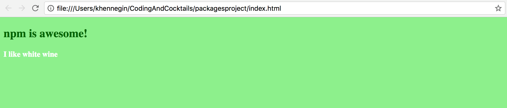

Homework
The more you practice, the better you’ll get. Reinforce what you’ve learned tonight with the following tutorial.
Part 1: Use the new jQuery dependency
Your index.js file already contains one way of selecting an element (document.querySelector). Now that you have jQuery, you can do this another way:
In Atom, open the index.js file and type the following code anywhere in the file:
var $ = require('jquery'); $('h4').css('color', 'white');On the command line, type the browserify command again:
browserify index.js > bundle.jsRefresh (or reopen) index.html in Chrome.
Your rendered HTML file should look like this:

Part 2: Initialize your project as a git repository
Start tracking your progress with git. We’re going to tell git what it should and should not care about.
On the command line, type the following:
git initNow type:
git statusThis command lists the files and folders git thinks it should track.In Atom, create a new file called .gitignore (note, this file starts with a dot). See Part 2 of the project section above if you need help creating new files.
Add the following to the .gitignore file and save it:
/node_modules bundle.js #For macs .DS_StoreBack on the command line, type this again:
git statusNotice that the node_modules folder and bundle.js file are no longer listed.Stage and commit these files.
Don't remember git?
See the git version control worksheet from April: bit.ly/CnCAprWork
Part 3: Continue to discover new dependencies and try them out!
The world is your oyster! Check out all of the packages available at http://www.npmjs.com.